**Homework 1 - Getting Started**
Student Name: Yingzhe Liu
Legi Number:
(Note: please read the [supplementary](#supplementary) section first before working on this report.)
# Part 1: Normal Integrator
**Time spent on this task: 30min**
**Describe your implementation of Normal Integrator.**
I followed the preliminaries guide on the nori website, the code should look identical.
First I find the intersection point, and then I return the component wise absolute value of the shading frame normal as a Color3f.
...
**Shading Normal Comparison: Ajax**
# Part 2: Average Visibility Integrator
**Time spent on this task: 40min**
**Describe your implementation of Average Visibility Integrator.**
For this task, I first find the intersection point. Then, I use the shading frame normal of the intersection point to generate a hemisphere and sample a vector on it.
Using the sampled vector as the direction and the intersection point as the origin, I setup a new ray. Finally, I intersect this new ray with the scene and return a binary color
according to the result.
...
**Average Visibility Comparison: Ajax**
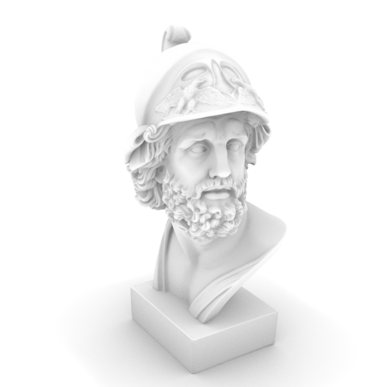
**Average Visibility Comparison: Sponza**
# Part 3: Analytic Sphere Shape
**Time spent on this task: 1h15min**
**Describe your implementation of Sphere and two functions.**
For the rayIntersect function, I replace Px, Py, and Pz of the sphere equation with a point's x, y, and z equation on the ray. After replacing, I form the result into the format of
at^2 + bt + c = 0, which is $$(D \cdot D)t^2 + 2(D \cdot (O - C))t + O \cdot O + C \cdot C - 2C \cdot O - r^2 = 0$$ where D, O, and C are 3-dimentional vectors. Then, I check the determinant.
Finally, I get the solution of t and check the smaller and larger t against mint and maxt to return the closest hit.
For the setHitInformation function, intersection is known on the above step. The shading frame and the geometry frame are the same: intersection point - center and then normalized. Finally,
the uv can be represented as the angle on the horizontal plane and the angle on the vertical plane. The angle on the horizontal plane is from -pi to pi, and the angle on the vertical plane
is from -pi/2 to pi/2. Mapping them to [0, 1], I get the uv. I referenced the equation here: https://en.wikipedia.org/wiki/UV_mapping
...
**Sphere Analytic vs Mesh Comparison**
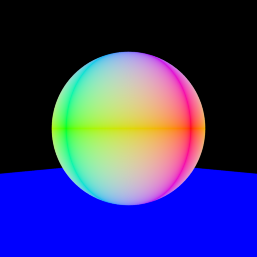
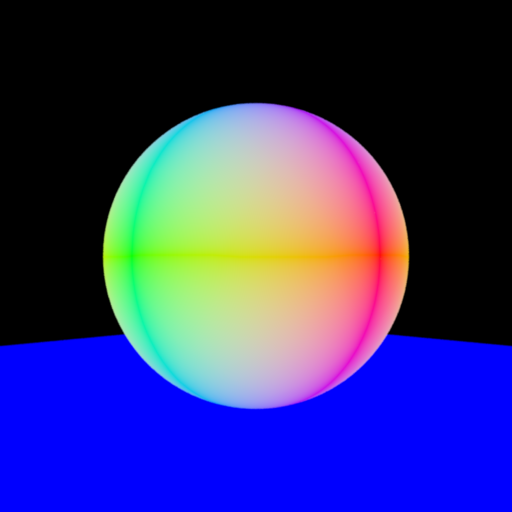
# Part 4: Direct Illumination Integrator
**Time spent on this task: 2h10min**
**Describe your implementation of Direct Illumination Integrator.**
For this task, I first implemented Point Light. In the constructor, I take in power and position of the light. Then, the intensity is power / 4pi.
For the eval() function, the returned irradiance should be phi / (4 * pi * r^2) = I / r^2.
For the sample function, I set wi to be the light position minus the intersection point normalized, which is the direction from the intersection point to the light.
Then, I set the shadow ray to begin at the intersection point and to the direction of wi.
For the direct illumination integrator, I sum up the (irradiance * BSDF * cos angle between normal and wi) of all light sources. If the shadow ray has intersection with the scene,
I set the irradiance from that light source to 0 by just continuing the loop.
I encountered a problem when calling BSDF.eval(). At the beginning I passed in wo and wi in the world space, and it only rendered the left half of the scene.
After asking on the gitlab forum (Issue: Wrong point light rendering), I found that wo and wi should be first transformed to the shading space.
...
**Direct Illumination Comparison: Sponza**
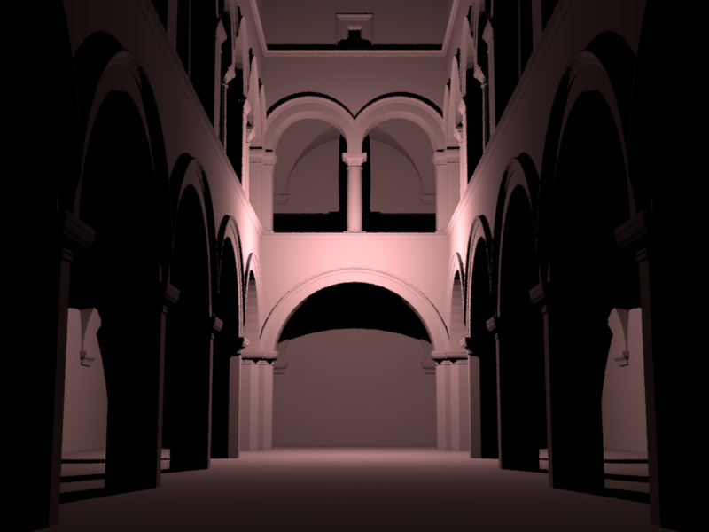
# Part 5: Texture Mapping
**Time spent on this task: 1h30min**
**Describe your implementation of texture mapping.**
For this task, I first transform the origin of the checkerboard according to the rule. Then, I subtract the origin from the uv to account for the fact that the origin may not be
at (0, 0) anymore.
Then, I map the uv to a grid on the checkerboard by using ceil() when the coordinate is greater than 0 or floor() otherwise. This maps the uv starting at grid 1.
After the mapping, I decide the color. When the signs of the two coordinates of the mapped grid are the same, if the sum of the two coordinates is even, it should be in m_value1, else m_value2.
When the signs are different, the color should be opposite on the same conditions.
...
**Checkerboard Comparison: Sphere**
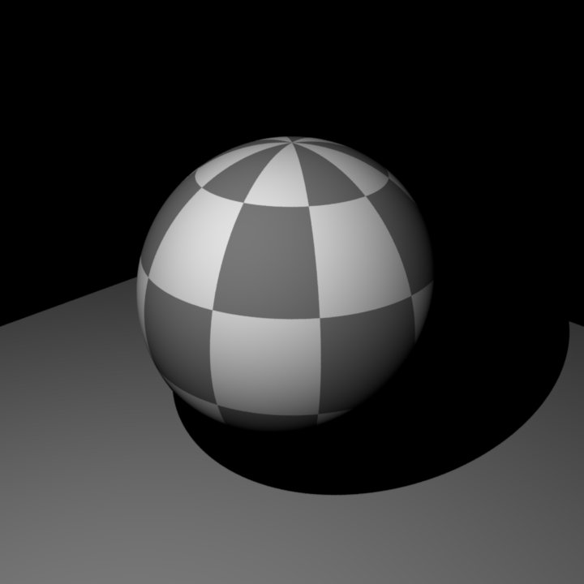
**Checkerboard Comparison: Mesh**
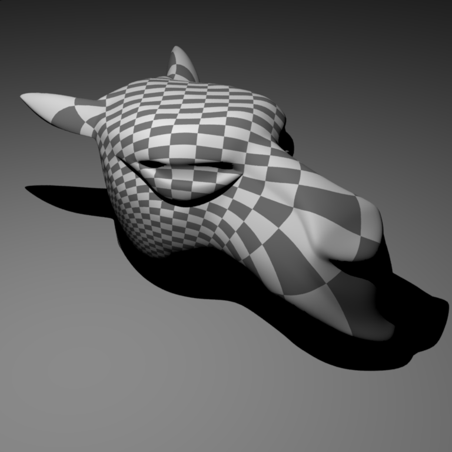
# Feedback
**Use this section to provide feedback about this assignment (each task, the handout, Nori, etc.). We appreciate your opinions to help improve future homeworks and projects.**
I think the structure of this assignment is well designed. If the description of each task is more in detail, for example, more introductions on the functions that will be used on each task,
it can be even better.
...
# Supplementary
* For each task, please note down the time you spent working through it and use at least a few sentences to describe your implementation. If applicable, also report the problems you encounter (e.g. whether or how it's solved, what is the difficult part).
* Please let us know to what extent your code is working (e.g. you only managed to work through part of this assignment, or your solution doesn't operate as expected in some corner cases). We encourage you to share your thinking process, and points will be granted based on your description even if the code is not 100% functioning.
* Nori generates both EXR and PNG format output. Please use PNG for image comparison in the report.
* This report template uses [Markdeep](https://casual-effects.com/markdeep/), which supports Markdown syntax in HTML file. For example usage, please refer to the [official demo document](https://casual-effects.com/markdeep/features.md.html).
* LaTeX is also supported for typing mathematical formulas:
$$
L_o(\mathbf{x}, \omega_o) = \int_{\Omega} L_i(\mathbf{x},\omega_i)\, f(\mathbf{x}, \omega_i, \omega_o)\, |\cos\theta_i|\, \mathrm{d}\omega_i
$$


 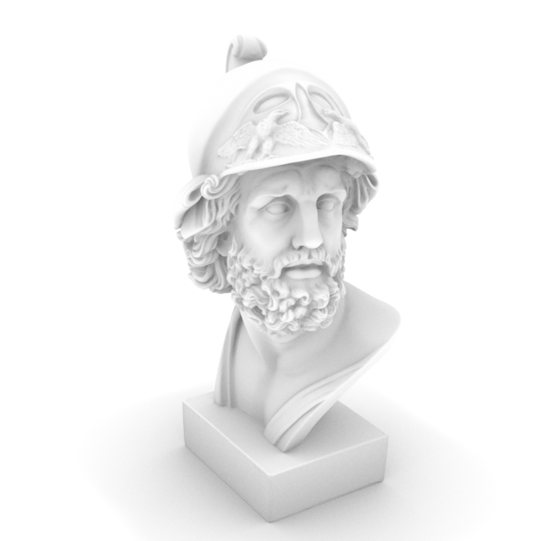
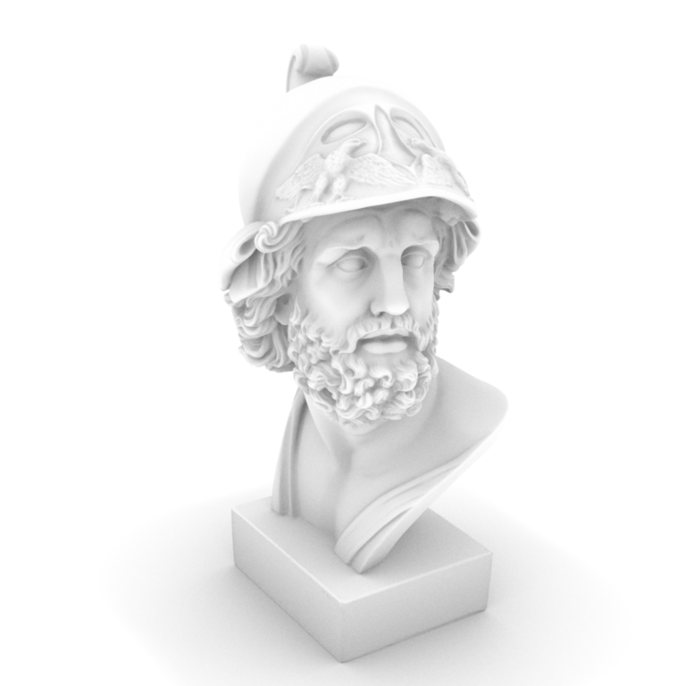


 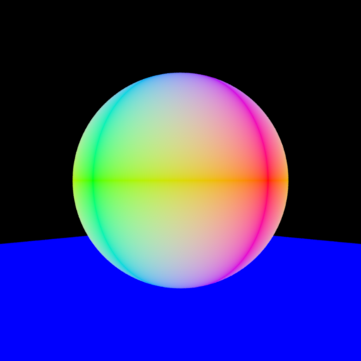
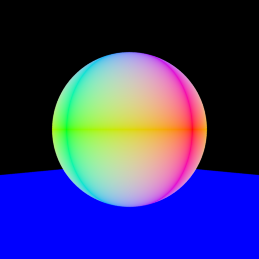
 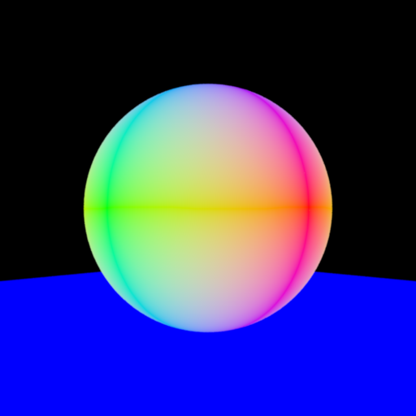
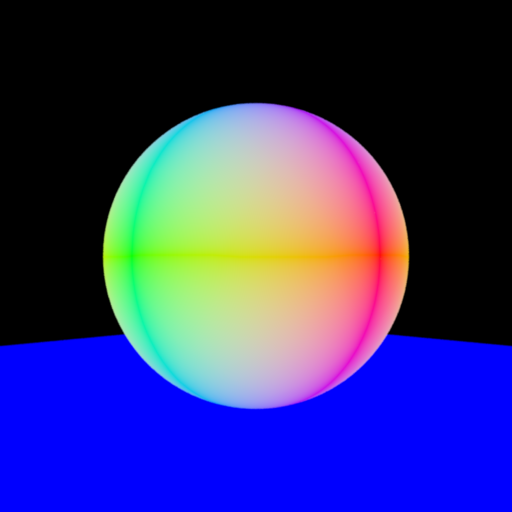
 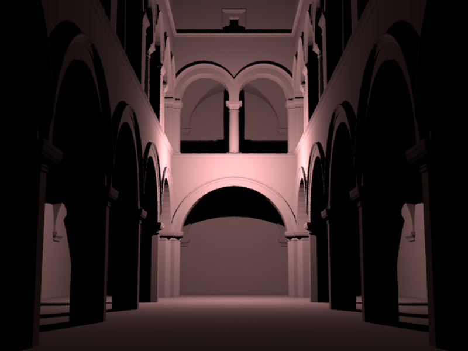
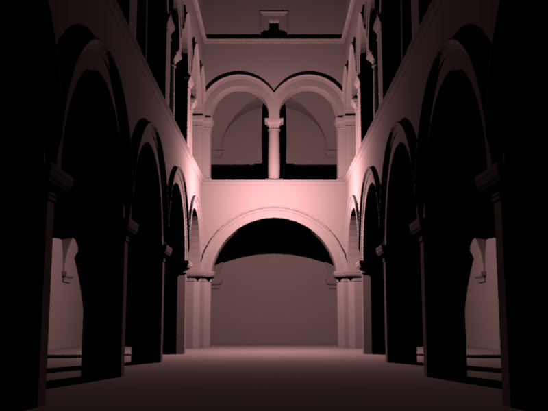
 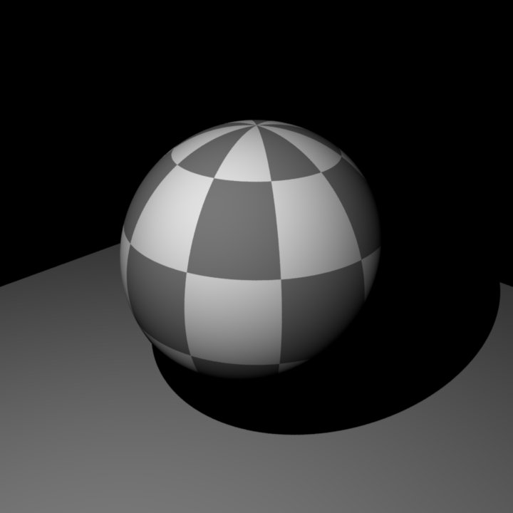
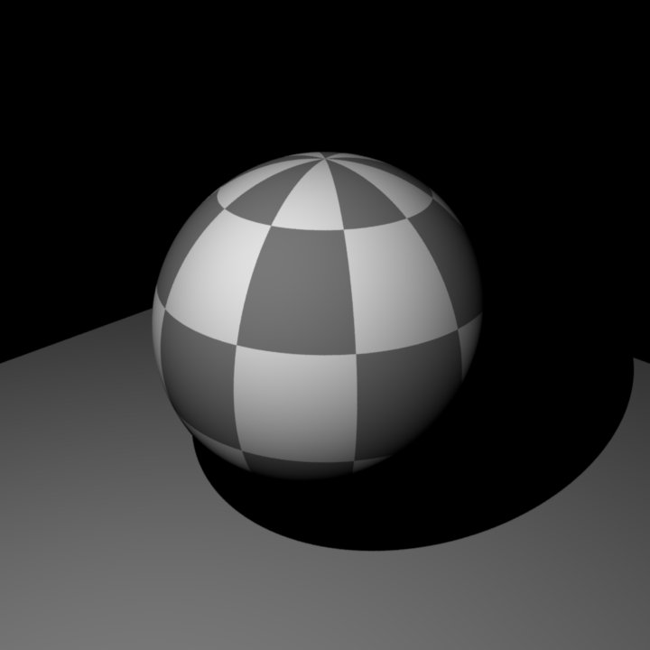
 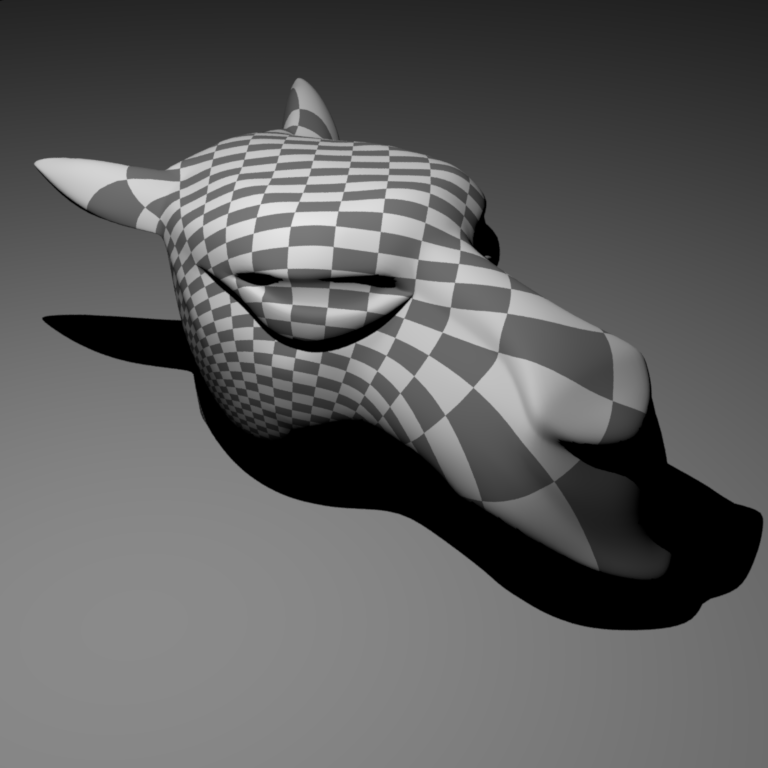
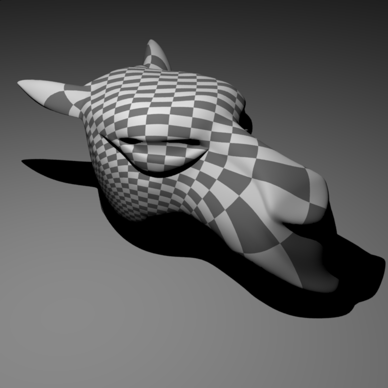